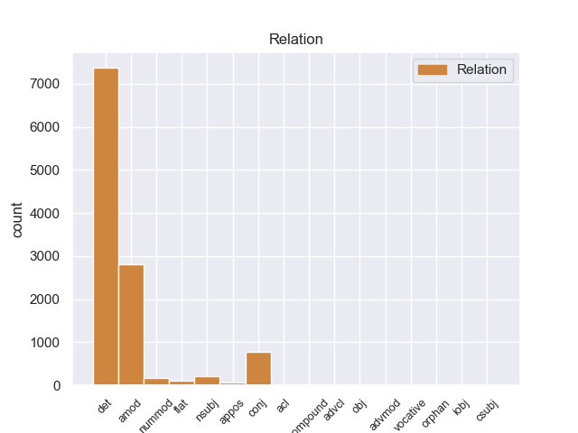
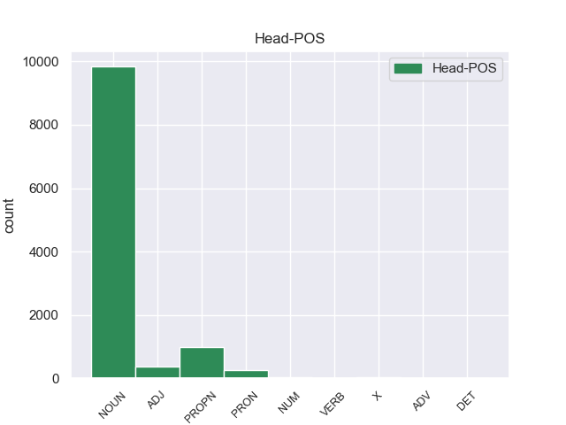
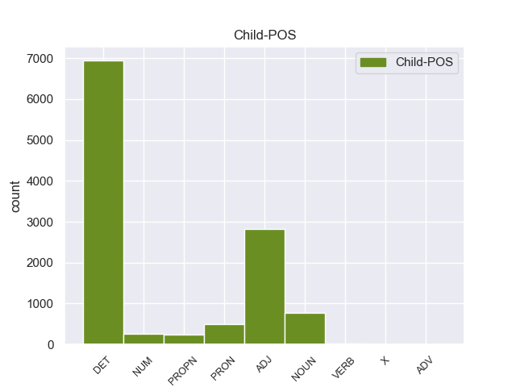

Distribution of features within this leaf



Agreement Rules sorted by frequency.
- When the dependent token is the determiner(det) of the head token,
1 Ευελπιστώ _ _ _ _ 0 _ _ _
2 ότι _ _ _ _ 0 _ _ _
3 η _ _ _ _ 0 _ _ _
4 απόφαση _ _ _ _ 0 _ _ _
5 αυτή _ _ _ _ 0 _ _ _
6 , _ _ _ _ 0 _ _ _
7 συμπεριλαμβανομένης _ _ _ _ 0 _ _ _
8 και _ _ _ _ 0 _ _ _
9 της _ _ _ _ 0 _ _ _
10 αιτιολογικής _ _ _ _ 0 _ _ _
11 έκθεσης _ _ _ _ 0 _ _ _
12 που _ _ _ _ 0 _ _ _
13 την _ _ _ _ 0 _ _ _
14 συνοδεύει _ _ _ _ 0 _ _ _
15 , _ _ _ _ 0 _ _ _
16 θα _ _ _ _ 0 _ _ _
17 διαβιβαστεί _ _ _ _ 0 _ _ _
18 σ _ _ _ _ 0 _ _ _
19 τις _ _ _ _ 0 _ _ _
20 γαλλικές _ _ _ _ 0 _ _ _
21 αρχές _ _ _ _ 0 _ _ _
22 , _ _ _ _ 0 _ _ _
23 εφόσον _ _ _ _ 0 _ _ _
24 υπερψηφιστεί _ _ _ _ 0 _ _ _
25 από _ _ _ _ 0 _ _ _
26 το ο DET _ Case=Acc|Definite=Def|Gender=Neut|Number=Sing|PronType=Art 27 det _ _
27 Κοινοβούλιο κοινοβούλιο NOUN _ Case=Acc|Gender=Neut|Number=Sing 0 _ _ _
28 . _ _ _ _ 0 _ _ _
1 Ευελπιστώ _ _ _ _ 0 _ _ _
2 ότι _ _ _ _ 0 _ _ _
3 η _ _ _ _ 0 _ _ _
4 απόφαση _ _ _ _ 0 _ _ _
5 αυτή _ _ _ _ 0 _ _ _
6 , _ _ _ _ 0 _ _ _
7 συμπεριλαμβανομένης _ _ _ _ 0 _ _ _
8 και _ _ _ _ 0 _ _ _
9 της _ _ _ _ 0 _ _ _
10 αιτιολογικής _ _ _ _ 0 _ _ _
11 έκθεσης _ _ _ _ 0 _ _ _
12 που _ _ _ _ 0 _ _ _
13 την _ _ _ _ 0 _ _ _
14 συνοδεύει _ _ _ _ 0 _ _ _
15 , _ _ _ _ 0 _ _ _
16 θα _ _ _ _ 0 _ _ _
17 διαβιβαστεί _ _ _ _ 0 _ _ _
18 σ _ _ _ _ 0 _ _ _
19 τις _ _ _ _ 0 _ _ _
20 γαλλικές γαλλικός ADJ _ Case=Acc|Gender=Fem|Number=Plur 21 amod _ _
21 αρχές αρχή NOUN _ Case=Acc|Gender=Fem|Number=Plur 0 _ _ _
22 , _ _ _ _ 0 _ _ _
23 εφόσον _ _ _ _ 0 _ _ _
24 υπερψηφιστεί _ _ _ _ 0 _ _ _
25 από _ _ _ _ 0 _ _ _
26 το _ _ _ _ 0 _ _ _
27 Κοινοβούλιο _ _ _ _ 0 _ _ _
28 . _ _ _ _ 0 _ _ _
1 Θα _ _ _ _ 0 _ _ _
2 ήθελα _ _ _ _ 0 _ _ _
3 να _ _ _ _ 0 _ _ _
4 επιστήσω _ _ _ _ 0 _ _ _
5 την _ _ _ _ 0 _ _ _
6 προσοχή _ _ _ _ 0 _ _ _
7 όλων _ _ _ _ 0 _ _ _
8 των _ _ _ _ 0 _ _ _
9 συναδέλφων _ _ _ _ 0 _ _ _
10 σ _ _ _ _ 0 _ _ _
11 το _ _ _ _ 0 _ _ _
12 γεγονός _ _ _ _ 0 _ _ _
13 ότι _ _ _ _ 0 _ _ _
14 , _ _ _ _ 0 _ _ _
15 εάν _ _ _ _ 0 _ _ _
16 υπάρχουν _ _ _ _ 0 _ _ _
17 κάποιες _ _ _ _ 0 _ _ _
18 ελευθερίες _ _ _ _ 0 _ _ _
19 οι _ _ _ _ 0 _ _ _
20 οποίες _ _ _ _ 0 _ _ _
21 είναι _ _ _ _ 0 _ _ _
22 ζωτικής _ _ _ _ 0 _ _ _
23 σημασίας _ _ _ _ 0 _ _ _
24 για _ _ _ _ 0 _ _ _
25 την _ _ _ _ 0 _ _ _
26 άσκηση _ _ _ _ 0 _ _ _
27 του _ _ _ _ 0 _ _ _
28 λειτουργήματος _ _ _ _ 0 _ _ _
29 της _ _ _ _ 0 _ _ _
30 δημόσιας _ _ _ _ 0 _ _ _
31 εκπροσώπησης _ _ _ _ 0 _ _ _
32 , _ _ _ _ 0 _ _ _
33 ιδίως _ _ _ _ 0 _ _ _
34 για _ _ _ _ 0 _ _ _
35 ένα _ _ _ _ 0 _ _ _
36 Κοινοβούλιο _ _ _ _ 0 _ _ _
37 σαν _ _ _ _ 0 _ _ _
38 το _ _ _ _ 0 _ _ _
39 δικό _ _ _ _ 0 _ _ _
40 μας _ _ _ _ 0 _ _ _
41 , _ _ _ _ 0 _ _ _
42 η _ _ _ _ 0 _ _ _
43 ελευθερία _ _ _ _ 0 _ _ _
44 της _ _ _ _ 0 _ _ _
45 επικοινωνίας _ _ _ _ 0 _ _ _
46 με _ _ _ _ 0 _ _ _
47 άλλους _ _ _ _ 0 _ _ _
48 πολίτες _ _ _ _ 0 _ _ _
49 και _ _ _ _ 0 _ _ _
50 με _ _ _ _ 0 _ _ _
51 τους _ _ _ _ 0 _ _ _
52 πολίτες _ _ _ _ 0 _ _ _
53 τρίτων _ _ _ _ 0 _ _ _
54 χωρών _ _ _ _ 0 _ _ _
55 , _ _ _ _ 0 _ _ _
56 καθώς _ _ _ _ 0 _ _ _
57 και _ _ _ _ 0 _ _ _
58 η _ _ _ _ 0 _ _ _
59 ελευθερία ελευθερία NOUN _ Case=Nom|Gender=Fem|Number=Sing 63 conj _ _
60 μετακίνησης _ _ _ _ 0 _ _ _
61 , _ _ _ _ 0 _ _ _
62 είναι _ _ _ _ 0 _ _ _
63 κρίσιμες κρίσιμος ADJ _ Case=Nom|Gender=Fem|Number=Plur 0 _ _ _
64 για _ _ _ _ 0 _ _ _
65 τη _ _ _ _ 0 _ _ _
66 διεκπεραίωση _ _ _ _ 0 _ _ _
67 του _ _ _ _ 0 _ _ _
68 έργου _ _ _ _ 0 _ _ _
69 μας _ _ _ _ 0 _ _ _
70 . _ _ _ _ 0 _ _ _
1 Θα _ _ _ _ 0 _ _ _
2 ήθελα _ _ _ _ 0 _ _ _
3 να _ _ _ _ 0 _ _ _
4 επιστήσω _ _ _ _ 0 _ _ _
5 την _ _ _ _ 0 _ _ _
6 προσοχή _ _ _ _ 0 _ _ _
7 όλων _ _ _ _ 0 _ _ _
8 των _ _ _ _ 0 _ _ _
9 συναδέλφων _ _ _ _ 0 _ _ _
10 σ _ _ _ _ 0 _ _ _
11 το _ _ _ _ 0 _ _ _
12 γεγονός _ _ _ _ 0 _ _ _
13 ότι _ _ _ _ 0 _ _ _
14 , _ _ _ _ 0 _ _ _
15 εάν _ _ _ _ 0 _ _ _
16 υπάρχουν _ _ _ _ 0 _ _ _
17 κάποιες _ _ _ _ 0 _ _ _
18 ελευθερίες _ _ _ _ 0 _ _ _
19 οι _ _ _ _ 0 _ _ _
20 οποίες _ _ _ _ 0 _ _ _
21 είναι _ _ _ _ 0 _ _ _
22 ζωτικής _ _ _ _ 0 _ _ _
23 σημασίας _ _ _ _ 0 _ _ _
24 για _ _ _ _ 0 _ _ _
25 την _ _ _ _ 0 _ _ _
26 άσκηση _ _ _ _ 0 _ _ _
27 του _ _ _ _ 0 _ _ _
28 λειτουργήματος _ _ _ _ 0 _ _ _
29 της _ _ _ _ 0 _ _ _
30 δημόσιας _ _ _ _ 0 _ _ _
31 εκπροσώπησης _ _ _ _ 0 _ _ _
32 , _ _ _ _ 0 _ _ _
33 ιδίως _ _ _ _ 0 _ _ _
34 για _ _ _ _ 0 _ _ _
35 ένα _ _ _ _ 0 _ _ _
36 Κοινοβούλιο _ _ _ _ 0 _ _ _
37 σαν _ _ _ _ 0 _ _ _
38 το _ _ _ _ 0 _ _ _
39 δικό _ _ _ _ 0 _ _ _
40 μας _ _ _ _ 0 _ _ _
41 , _ _ _ _ 0 _ _ _
42 η _ _ _ _ 0 _ _ _
43 ελευθερία ελευθερία NOUN _ Case=Nom|Gender=Fem|Number=Sing 63 nsubj _ _
44 της _ _ _ _ 0 _ _ _
45 επικοινωνίας _ _ _ _ 0 _ _ _
46 με _ _ _ _ 0 _ _ _
47 άλλους _ _ _ _ 0 _ _ _
48 πολίτες _ _ _ _ 0 _ _ _
49 και _ _ _ _ 0 _ _ _
50 με _ _ _ _ 0 _ _ _
51 τους _ _ _ _ 0 _ _ _
52 πολίτες _ _ _ _ 0 _ _ _
53 τρίτων _ _ _ _ 0 _ _ _
54 χωρών _ _ _ _ 0 _ _ _
55 , _ _ _ _ 0 _ _ _
56 καθώς _ _ _ _ 0 _ _ _
57 και _ _ _ _ 0 _ _ _
58 η _ _ _ _ 0 _ _ _
59 ελευθερία _ _ _ _ 0 _ _ _
60 μετακίνησης _ _ _ _ 0 _ _ _
61 , _ _ _ _ 0 _ _ _
62 είναι _ _ _ _ 0 _ _ _
63 κρίσιμες κρίσιμος ADJ _ Case=Nom|Gender=Fem|Number=Plur 0 _ _ _
64 για _ _ _ _ 0 _ _ _
65 τη _ _ _ _ 0 _ _ _
66 διεκπεραίωση _ _ _ _ 0 _ _ _
67 του _ _ _ _ 0 _ _ _
68 έργου _ _ _ _ 0 _ _ _
69 μας _ _ _ _ 0 _ _ _
70 . _ _ _ _ 0 _ _ _
1 Είναι _ _ _ _ 0 _ _ _
2 σημαντικό _ _ _ _ 0 _ _ _
3 να _ _ _ _ 0 _ _ _
4 υπογραμμίσω _ _ _ _ 0 _ _ _
5 το _ _ _ _ 0 _ _ _
6 γεγονός _ _ _ _ 0 _ _ _
7 ότι _ _ _ _ 0 _ _ _
8 και _ _ _ _ 0 _ _ _
9 οι _ _ _ _ 0 _ _ _
10 δύο δύο NUM _ Case=Nom|Gender=Masc|Number=Plur|NumType=Card 11 nummod _ _
11 βουλευτές βουλευτής NOUN _ Case=Nom|Gender=Masc|Number=Plur 0 _ _ _
12 διατρανώνουν _ _ _ _ 0 _ _ _
13 σθεναρά _ _ _ _ 0 _ _ _
14 την _ _ _ _ 0 _ _ _
15 αθωότητά _ _ _ _ 0 _ _ _
16 τους _ _ _ _ 0 _ _ _
17 και _ _ _ _ 0 _ _ _
18 καταγγέλλουν _ _ _ _ 0 _ _ _
19 αυτό _ _ _ _ 0 _ _ _
20 που _ _ _ _ 0 _ _ _
21 οι _ _ _ _ 0 _ _ _
22 ίδιοι _ _ _ _ 0 _ _ _
23 θεωρούν _ _ _ _ 0 _ _ _
24 καταχρήσεις _ _ _ _ 0 _ _ _
25 σ _ _ _ _ 0 _ _ _
26 τη _ _ _ _ 0 _ _ _
27 διαδικασία _ _ _ _ 0 _ _ _
28 δίωξης _ _ _ _ 0 _ _ _
29 . _ _ _ _ 0 _ _ _
1 Από _ _ _ _ 0 _ _ _
2 τη _ _ _ _ 0 _ _ _
3 πλευρά _ _ _ _ 0 _ _ _
4 του _ _ _ _ 0 _ _ _
5 ο _ _ _ _ 0 _ _ _
6 Πρωθυπουργός _ _ _ _ 0 _ _ _
7 του _ _ _ _ 0 _ _ _
8 Ισραήλ _ _ _ _ 0 _ _ _
9 , _ _ _ _ 0 _ _ _
10 Βενιαμίν Βενιαμίν PROPN _ Case=Nom|Gender=Masc|Number=Sing 0 _ _ _
11 Νετανιάχου Νετανιάχου PROPN _ Case=Nom|Gender=Masc|Number=Sing 10 flat _ _
12 , _ _ _ _ 0 _ _ _
13 εξέφρασε _ _ _ _ 0 _ _ _
14 ικανοποίηση _ _ _ _ 0 _ _ _
15 για _ _ _ _ 0 _ _ _
16 το _ _ _ _ 0 _ _ _
17 σχόλιο _ _ _ _ 0 _ _ _
18 του _ _ _ _ 0 _ _ _
19 Μπαράκ _ _ _ _ 0 _ _ _
20 Ομπάμα _ _ _ _ 0 _ _ _
21 ότι _ _ _ _ 0 _ _ _
22 « _ _ _ _ 0 _ _ _
23 θα _ _ _ _ 0 _ _ _
24 εξεταστούν _ _ _ _ 0 _ _ _
25 όλες _ _ _ _ 0 _ _ _
26 οι _ _ _ _ 0 _ _ _
27 εναλλακτικές _ _ _ _ 0 _ _ _
28 λύσεις _ _ _ _ 0 _ _ _
29 αναφορικά _ _ _ _ 0 _ _ _
30 με _ _ _ _ 0 _ _ _
31 το _ _ _ _ 0 _ _ _
32 πυρηνικό _ _ _ _ 0 _ _ _
33 πρόγραμμα _ _ _ _ 0 _ _ _
34 του _ _ _ _ 0 _ _ _
35 Ιράν _ _ _ _ 0 _ _ _
36 » _ _ _ _ 0 _ _ _
37 . _ _ _ _ 0 _ _ _
1 Από _ _ _ _ 0 _ _ _
2 τη _ _ _ _ 0 _ _ _
3 πλευρά _ _ _ _ 0 _ _ _
4 του _ _ _ _ 0 _ _ _
5 ο _ _ _ _ 0 _ _ _
6 Πρωθυπουργός πρωθυπουργός NOUN _ Case=Nom|Gender=Masc|Number=Sing 0 _ _ _
7 του _ _ _ _ 0 _ _ _
8 Ισραήλ _ _ _ _ 0 _ _ _
9 , _ _ _ _ 0 _ _ _
10 Βενιαμίν Βενιαμίν PROPN _ Case=Nom|Gender=Masc|Number=Sing 6 appos _ _
11 Νετανιάχου _ _ _ _ 0 _ _ _
12 , _ _ _ _ 0 _ _ _
13 εξέφρασε _ _ _ _ 0 _ _ _
14 ικανοποίηση _ _ _ _ 0 _ _ _
15 για _ _ _ _ 0 _ _ _
16 το _ _ _ _ 0 _ _ _
17 σχόλιο _ _ _ _ 0 _ _ _
18 του _ _ _ _ 0 _ _ _
19 Μπαράκ _ _ _ _ 0 _ _ _
20 Ομπάμα _ _ _ _ 0 _ _ _
21 ότι _ _ _ _ 0 _ _ _
22 « _ _ _ _ 0 _ _ _
23 θα _ _ _ _ 0 _ _ _
24 εξεταστούν _ _ _ _ 0 _ _ _
25 όλες _ _ _ _ 0 _ _ _
26 οι _ _ _ _ 0 _ _ _
27 εναλλακτικές _ _ _ _ 0 _ _ _
28 λύσεις _ _ _ _ 0 _ _ _
29 αναφορικά _ _ _ _ 0 _ _ _
30 με _ _ _ _ 0 _ _ _
31 το _ _ _ _ 0 _ _ _
32 πυρηνικό _ _ _ _ 0 _ _ _
33 πρόγραμμα _ _ _ _ 0 _ _ _
34 του _ _ _ _ 0 _ _ _
35 Ιράν _ _ _ _ 0 _ _ _
36 » _ _ _ _ 0 _ _ _
37 . _ _ _ _ 0 _ _ _
1 Ο _ _ _ _ 0 _ _ _
2 γιος _ _ _ _ 0 _ _ _
3 της _ _ _ _ 0 _ _ _
4 , _ _ _ _ 0 _ _ _
5 πρίγκηπας πρίγκηπας NOUN _ Case=Nom|Gender=Masc|Number=Sing 0 _ _ _
6 Γουλιέλμος _ _ _ _ 0 _ _ _
7 - _ _ _ _ 0 _ _ _
8 Αλέξανδρος _ _ _ _ 0 _ _ _
9 - _ _ _ _ 0 _ _ _
10 τώρα _ _ _ _ 0 _ _ _
11 θα _ _ _ _ 0 _ _ _
12 είναι _ _ _ _ 0 _ _ _
13 γνωστός γνωστός ADJ _ Case=Nom|Gender=Masc|Number=Sing 5 acl _ _
14 ως _ _ _ _ 0 _ _ _
15 βασιλιάς _ _ _ _ 0 _ _ _
16 Γουλιέλμος _ _ _ _ 0 _ _ _
17 Δ' _ _ _ _ 0 _ _ _
18 - _ _ _ _ 0 _ _ _
19 ήταν _ _ _ _ 0 _ _ _
20 γνωστός _ _ _ _ 0 _ _ _
21 για _ _ _ _ 0 _ _ _
22 τα _ _ _ _ 0 _ _ _
23 ερωτικά _ _ _ _ 0 _ _ _
24 του _ _ _ _ 0 _ _ _
25 σκάνδαλα _ _ _ _ 0 _ _ _
26 , _ _ _ _ 0 _ _ _
27 αν _ _ _ _ 0 _ _ _
28 και _ _ _ _ 0 _ _ _
29 τη _ _ _ _ 0 _ _ _
30 τελευταία _ _ _ _ 0 _ _ _
31 δεκαετία _ _ _ _ 0 _ _ _
32 σταμάτησε _ _ _ _ 0 _ _ _
33 να _ _ _ _ 0 _ _ _
34 μπλέκει _ _ _ _ 0 _ _ _
35 σε _ _ _ _ 0 _ _ _
36 σκάνδαλα _ _ _ _ 0 _ _ _
37 και _ _ _ _ 0 _ _ _
38 ανέλαβε _ _ _ _ 0 _ _ _
39 την _ _ _ _ 0 _ _ _
40 προεδρεία _ _ _ _ 0 _ _ _
41 της _ _ _ _ 0 _ _ _
42 Επιτροπής _ _ _ _ 0 _ _ _
43 του _ _ _ _ 0 _ _ _
44 ΟΗΕ _ _ _ _ 0 _ _ _
45 για _ _ _ _ 0 _ _ _
46 το _ _ _ _ 0 _ _ _
47 Νερό _ _ _ _ 0 _ _ _
48 , _ _ _ _ 0 _ _ _
49 καθώς _ _ _ _ 0 _ _ _
50 επίσης _ _ _ _ 0 _ _ _
51 συνεργάζεται _ _ _ _ 0 _ _ _
52 με _ _ _ _ 0 _ _ _
53 τη _ _ _ _ 0 _ _ _
54 Διεθνή _ _ _ _ 0 _ _ _
55 Ολυμπιακή _ _ _ _ 0 _ _ _
56 Επιτροπή _ _ _ _ 0 _ _ _
57 . _ _ _ _ 0 _ _ _
1 Η _ _ _ _ 0 _ _ _
2 Λιβύη _ _ _ _ 0 _ _ _
3 δήλωσε _ _ _ _ 0 _ _ _
4 ότι _ _ _ _ 0 _ _ _
5 θα _ _ _ _ 0 _ _ _
6 επιδιώξει _ _ _ _ 0 _ _ _
7 την _ _ _ _ 0 _ _ _
8 έκδοση _ _ _ _ 0 _ _ _
9 του _ _ _ _ 0 _ _ _
10 Αμπντάλα _ _ _ _ 0 _ _ _
11 αλ _ _ _ _ 0 _ _ _
12 Σενούσι _ _ _ _ 0 _ _ _
13 , _ _ _ _ 0 _ _ _
14 πρώην πρώην ADV _ Case=Gen|Gender=Masc|Number=Sing 15 advmod _ _
15 αρχηγού αρχηγούς NOUN _ Case=Gen|Gender=Masc|Number=Sing 0 _ _ _
16 των _ _ _ _ 0 _ _ _
17 μυστικών _ _ _ _ 0 _ _ _
18 υπηρεσιών _ _ _ _ 0 _ _ _
19 της _ _ _ _ 0 _ _ _
20 Λιβύης _ _ _ _ 0 _ _ _
21 κατά _ _ _ _ 0 _ _ _
22 την _ _ _ _ 0 _ _ _
23 περίοδο _ _ _ _ 0 _ _ _
24 του _ _ _ _ 0 _ _ _
25 Μουαμάρ _ _ _ _ 0 _ _ _
26 αλ _ _ _ _ 0 _ _ _
27 Καντάφι _ _ _ _ 0 _ _ _
28 . _ _ _ _ 0 _ _ _
1 Η _ _ _ _ 0 _ _ _
2 σημερινή _ _ _ _ 0 _ _ _
3 μέρα _ _ _ _ 0 _ _ _
4 σ _ _ _ _ 0 _ _ _
5 το _ _ _ _ 0 _ _ _
6 Βέλγιο _ _ _ _ 0 _ _ _
7 είναι _ _ _ _ 0 _ _ _
8 ημέρα ημέρα NOUN _ Case=Nom|Gender=Fem|Number=Sing 0 _ _ _
9 πένθους _ _ _ _ 0 _ _ _
10 για _ _ _ _ 0 _ _ _
11 τα _ _ _ _ 0 _ _ _
12 θύματα _ _ _ _ 0 _ _ _
13 ενός _ _ _ _ 0 _ _ _
14 αυτοκινητιστικού _ _ _ _ 0 _ _ _
15 δυστυχήματος _ _ _ _ 0 _ _ _
16 σε _ _ _ _ 0 _ _ _
17 τούνελ _ _ _ _ 0 _ _ _
18 της _ _ _ _ 0 _ _ _
19 Ελβετίας _ _ _ _ 0 _ _ _
20 , _ _ _ _ 0 _ _ _
21 του _ _ _ _ 0 _ _ _
22 οποίου _ _ _ _ 0 _ _ _
23 θύματα _ _ _ _ 0 _ _ _
24 ήταν _ _ _ _ 0 _ _ _
25 μαθητές μαθητης NOUN _ Case=Nom|Gender=Masc|Number=Plur 8 advcl _ _
26 δύο _ _ _ _ 0 _ _ _
27 βελγικών _ _ _ _ 0 _ _ _
28 σχολείων _ _ _ _ 0 _ _ _
29 . _ _ _ _ 0 _ _ _
1 Κατά _ _ _ _ 0 _ _ _
2 το _ _ _ _ 0 _ _ _
3 προηγούμενο _ _ _ _ 0 _ _ _
4 έτος _ _ _ _ 0 _ _ _
5 , _ _ _ _ 0 _ _ _
6 είδαμε _ _ _ _ 0 _ _ _
7 να _ _ _ _ 0 _ _ _
8 πραγματοποιείται _ _ _ _ 0 _ _ _
9 κάποια _ _ _ _ 0 _ _ _
10 πρόοδος _ _ _ _ 0 _ _ _
11 όσον _ _ _ _ 0 _ _ _
12 αφορά _ _ _ _ 0 _ _ _
13 αυτή _ _ _ _ 0 _ _ _
14 τη _ _ _ _ 0 _ _ _
15 διαδικασία _ _ _ _ 0 _ _ _
16 , _ _ _ _ 0 _ _ _
17 ιδίως _ _ _ _ 0 _ _ _
18 με _ _ _ _ 0 _ _ _
19 την _ _ _ _ 0 _ _ _
20 υιοθέτηση _ _ _ _ 0 _ _ _
21 της _ _ _ _ 0 _ _ _
22 δέσμης _ _ _ _ 0 _ _ _
23 μέτρων _ _ _ _ 0 _ _ _
24 για _ _ _ _ 0 _ _ _
25 τις _ _ _ _ 0 _ _ _
26 τηλεπικοινωνίες _ _ _ _ 0 _ _ _
27 από _ _ _ _ 0 _ _ _
28 το _ _ _ _ 0 _ _ _
29 Συμβούλιο _ _ _ _ 0 _ _ _
30 , _ _ _ _ 0 _ _ _
31 την _ _ _ _ 0 _ _ _
32 επίτευξη _ _ _ _ 0 _ _ _
33 συμφωνίας _ _ _ _ 0 _ _ _
34 για _ _ _ _ 0 _ _ _
35 το _ _ _ _ 0 _ _ _
36 καταστατικό _ _ _ _ 0 _ _ _
37 της _ _ _ _ 0 _ _ _
38 ευρωπαϊκής _ _ _ _ 0 _ _ _
39 εταιρείας _ _ _ _ 0 _ _ _
40 , _ _ _ _ 0 _ _ _
41 τη _ _ _ _ 0 _ _ _
42 μείωση _ _ _ _ 0 _ _ _
43 των _ _ _ _ 0 _ _ _
44 φορολογικών _ _ _ _ 0 _ _ _
45 επιβαρύνσεων _ _ _ _ 0 _ _ _
46 κατά _ _ _ _ 0 _ _ _
47 τρία τρεις NUM NUM Case=Acc|Gender=Neut|Number=Plur|NumType=Card 48 compound _ _
48 τέταρτα τέταρτος NUM NUM Case=Acc|Gender=Neut|Number=Plur|NumType=Ord 0 _ _ _
49 της _ _ _ _ 0 _ _ _
50 εκατοστιαίας _ _ _ _ 0 _ _ _
51 μονάδας _ _ _ _ 0 _ _ _
52 του _ _ _ _ 0 _ _ _
53 ΑΕγχΠ _ _ _ _ 0 _ _ _
54 . _ _ _ _ 0 _ _ _
1 Αξιότιμε _ _ _ _ 0 _ _ _
2 κύριε _ _ _ _ 0 _ _ _
3 Πρόεδρε _ _ _ _ 0 _ _ _
4 , _ _ _ _ 0 _ _ _
5 κυρία κυρία NOUN NOUN Case=Voc|Gender=Fem|Number=Sing 6 vocative _ _
6 Επίτροπε επίτροπος NOUN NOUN Case=Voc|Gender=Fem|Number=Sing 0 _ _ _
7 , _ _ _ _ 0 _ _ _
8 αξιότιμοι _ _ _ _ 0 _ _ _
9 συνάδελφοι _ _ _ _ 0 _ _ _
10 , _ _ _ _ 0 _ _ _
11 η _ _ _ _ 0 _ _ _
12 ελευθέρωση _ _ _ _ 0 _ _ _
13 των _ _ _ _ 0 _ _ _
14 οδικών _ _ _ _ 0 _ _ _
15 μεταφορών _ _ _ _ 0 _ _ _
16 αναμφίβολα _ _ _ _ 0 _ _ _
17 οδήγησε _ _ _ _ 0 _ _ _
18 σ _ _ _ _ 0 _ _ _
19 το _ _ _ _ 0 _ _ _
20 να _ _ _ _ 0 _ _ _
21 έχουμε _ _ _ _ 0 _ _ _
22 σ _ _ _ _ 0 _ _ _
23 την _ _ _ _ 0 _ _ _
24 Ευρώπη _ _ _ _ 0 _ _ _
25 καλύτερη _ _ _ _ 0 _ _ _
26 προσφορά _ _ _ _ 0 _ _ _
27 και _ _ _ _ 0 _ _ _
28 καλύτερες _ _ _ _ 0 _ _ _
29 τιμές _ _ _ _ 0 _ _ _
30 . _ _ _ _ 0 _ _ _
1 Κάθε _ _ _ _ 0 _ _ _
2 οδηγία _ _ _ _ 0 _ _ _
3 , _ _ _ _ 0 _ _ _
4 όσο _ _ _ _ 0 _ _ _
5 καλή _ _ _ _ 0 _ _ _
6 κι _ _ _ _ 0 _ _ _
7 αν _ _ _ _ 0 _ _ _
8 είναι _ _ _ _ 0 _ _ _
9 , _ _ _ _ 0 _ _ _
10 έχει _ _ _ _ 0 _ _ _
11 αξία _ _ _ _ 0 _ _ _
12 μόνο _ _ _ _ 0 _ _ _
13 εάν _ _ _ _ 0 _ _ _
14 ελέγχεται _ _ _ _ 0 _ _ _
15 σε _ _ _ _ 0 _ _ _
16 τακτά _ _ _ _ 0 _ _ _
17 διαστήματα _ _ _ _ 0 _ _ _
18 η _ _ _ _ 0 _ _ _
19 εφαρμογή _ _ _ _ 0 _ _ _
20 της _ _ _ _ 0 _ _ _
21 , _ _ _ _ 0 _ _ _
22 και _ _ _ _ 0 _ _ _
23 μάλιστα _ _ _ _ 0 _ _ _
24 με _ _ _ _ 0 _ _ _
25 τον _ _ _ _ 0 _ _ _
26 ίδιο _ _ _ _ 0 _ _ _
27 τρόπο τρόπος NOUN NOUN Case=Acc|Gender=Masc|Number=Sing 0 _ _ _
28 σε _ _ _ _ 0 _ _ _
29 όλα _ _ _ _ 0 _ _ _
30 τα _ _ _ _ 0 _ _ _
31 κράτη κράτος NOUN NOUN Case=Acc|Gender=Neut|Number=Plur 27 orphan _ _
32 μέλη _ _ _ _ 0 _ _ _
33 . _ _ _ _ 0 _ _ _
1 Εν _ _ _ _ 0 _ _ _
2 πάση _ _ _ _ 0 _ _ _
3 περιπτώσει _ _ _ _ 0 _ _ _
4 , _ _ _ _ 0 _ _ _
5 είναι _ _ _ _ 0 _ _ _
6 σαφές σαφής ADJ _ Case=Nom|Gender=Neut|Number=Sing 0 _ _ _
7 ότι _ _ _ _ 0 _ _ _
8 αυτό _ _ _ _ 0 _ _ _
9 που _ _ _ _ 0 _ _ _
10 εγκρίναμε _ _ _ _ 0 _ _ _
11 σήμερα _ _ _ _ 0 _ _ _
12 είναι _ _ _ _ 0 _ _ _
13 προϊόν προϊόν NOUN _ Case=Nom|Gender=Neut|Number=Sing 6 csubj _ _
14 πολύ _ _ _ _ 0 _ _ _
15 βαθιάς _ _ _ _ 0 _ _ _
16 σκέψης _ _ _ _ 0 _ _ _
17 και _ _ _ _ 0 _ _ _
18 αποτελεί _ _ _ _ 0 _ _ _
19 ένα _ _ _ _ 0 _ _ _
20 δομημένο _ _ _ _ 0 _ _ _
21 σχέδιο _ _ _ _ 0 _ _ _
22 κανονισμού _ _ _ _ 0 _ _ _
23 , _ _ _ _ 0 _ _ _
24 αλλά _ _ _ _ 0 _ _ _
25 χρειάζεται _ _ _ _ 0 _ _ _
26 να _ _ _ _ 0 _ _ _
27 διεξαχθούν _ _ _ _ 0 _ _ _
28 περαιτέρω _ _ _ _ 0 _ _ _
29 διαβουλεύσεις _ _ _ _ 0 _ _ _
30 και _ _ _ _ 0 _ _ _
31 αν _ _ _ _ 0 _ _ _
32 από _ _ _ _ 0 _ _ _
33 αυτές _ _ _ _ 0 _ _ _
34 ανακύψουν _ _ _ _ 0 _ _ _
35 σημαντικά _ _ _ _ 0 _ _ _
36 και _ _ _ _ 0 _ _ _
37 πειστικά _ _ _ _ 0 _ _ _
38 επιχειρήματα _ _ _ _ 0 _ _ _
39 , _ _ _ _ 0 _ _ _
40 φυσικά _ _ _ _ 0 _ _ _
41 θα _ _ _ _ 0 _ _ _
42 τα _ _ _ _ 0 _ _ _
43 λάβουμε _ _ _ _ 0 _ _ _
44 πολύ _ _ _ _ 0 _ _ _
45 σοβαρά _ _ _ _ 0 _ _ _
46 υπόψη _ _ _ _ 0 _ _ _
47 . _ _ _ _ 0 _ _ _
Disagree Examples:
1 Πιστεύω _ _ _ _ 0 _ _ _
2 ότι _ _ _ _ 0 _ _ _
3 το _ _ _ _ 0 _ _ _
4 ένταλμα _ _ _ _ 0 _ _ _
5 για _ _ _ _ 0 _ _ _
6 το ο DET DET Case=Nom|Definite=Def|Gender=Neut|Number=Sing|PronType=Art 7 det _ _
7 οποίο οποίος PRON PRON Case=Acc|Gender=Neut|Number=Sing|Person=3|PronType=Rel 0 _ _ _
8 εργαζόμαστε _ _ _ _ 0 _ _ _
9 μπορεί _ _ _ _ 0 _ _ _
10 να _ _ _ _ 0 _ _ _
11 είναι _ _ _ _ 0 _ _ _
12 , _ _ _ _ 0 _ _ _
13 τουλάχιστον _ _ _ _ 0 _ _ _
14 , _ _ _ _ 0 _ _ _
15 πρακτικό _ _ _ _ 0 _ _ _
16 και _ _ _ _ 0 _ _ _
17 να _ _ _ _ 0 _ _ _
18 μας _ _ _ _ 0 _ _ _
19 οδηγήσει _ _ _ _ 0 _ _ _
20 σε _ _ _ _ 0 _ _ _
21 θετικά _ _ _ _ 0 _ _ _
22 αποτελέσματα _ _ _ _ 0 _ _ _
23 . _ _ _ _ 0 _ _ _
1 Κύριε _ _ _ _ 0 _ _ _
2 Πρόεδρε _ _ _ _ 0 _ _ _
3 , _ _ _ _ 0 _ _ _
4 δεν _ _ _ _ 0 _ _ _
5 τρέφω _ _ _ _ 0 _ _ _
6 κανένα _ _ _ _ 0 _ _ _
7 σεβασμό _ _ _ _ 0 _ _ _
8 προς _ _ _ _ 0 _ _ _
9 εκείνους _ _ _ _ 0 _ _ _
10 που _ _ _ _ 0 _ _ _
11 επιδιώκουν _ _ _ _ 0 _ _ _
12 να _ _ _ _ 0 _ _ _
13 θυσιάσουν _ _ _ _ 0 _ _ _
14 την _ _ _ _ 0 _ _ _
15 ζωή ζωή NOUN NOUN Case=Acc|Gender=Fem|Number=Sing 0 _ _ _
16 των _ _ _ _ 0 _ _ _
17 υπολοίπων υπόλοιπος ADJ ADJ Case=Gen|Gender=Fem|Number=Plur 15 amod _ _
18 για _ _ _ _ 0 _ _ _
19 να _ _ _ _ 0 _ _ _
20 επιτύχουν _ _ _ _ 0 _ _ _
21 τους _ _ _ _ 0 _ _ _
22 στόχους _ _ _ _ 0 _ _ _
23 τους _ _ _ _ 0 _ _ _
24 . _ _ _ _ 0 _ _ _
1 Σήμερα _ _ _ _ 0 _ _ _
2 σώζονται _ _ _ _ 0 _ _ _
3 μόνο _ _ _ _ 0 _ _ _
4 τρεις _ _ _ _ 0 _ _ _
5 εκκλησίες _ _ _ _ 0 _ _ _
6 , _ _ _ _ 0 _ _ _
7 η _ _ _ _ 0 _ _ _
8 εκκλησία _ _ _ _ 0 _ _ _
9 του _ _ _ _ 0 _ _ _
10 Χριστού _ _ _ _ 0 _ _ _
11 , _ _ _ _ 0 _ _ _
12 με _ _ _ _ 0 _ _ _
13 τις _ _ _ _ 0 _ _ _
14 υπέροχες _ _ _ _ 0 _ _ _
15 τοιχογραφίες τοιχογραφία NOUN NOUN Case=Acc|Gender=Fem|Number=Plur 0 _ _ _
16 του _ _ _ _ 0 _ _ _
17 1695 _ _ _ _ 0 _ _ _
18 και _ _ _ _ 0 _ _ _
19 το _ _ _ _ 0 _ _ _
20 ξύλινο _ _ _ _ 0 _ _ _
21 τέμπλο τέμπλο NOUN NOUN Case=Nom|Gender=Neut|Number=Sing 15 conj _ _
22 της _ _ _ _ 0 _ _ _
23 ίδιας _ _ _ _ 0 _ _ _
24 εποχής _ _ _ _ 0 _ _ _
25 , _ _ _ _ 0 _ _ _
26 η _ _ _ _ 0 _ _ _
27 Αγία _ _ _ _ 0 _ _ _
28 Μαρίνα _ _ _ _ 0 _ _ _
29 και _ _ _ _ 0 _ _ _
30 ο _ _ _ _ 0 _ _ _
31 Άγιος _ _ _ _ 0 _ _ _
32 Νικόλαος _ _ _ _ 0 _ _ _
33 . _ _ _ _ 0 _ _ _
1 Γαλλικά _ _ _ _ 0 _ _ _
2 ΜΜΕ _ _ _ _ 0 _ _ _
3 μεταδίδουν _ _ _ _ 0 _ _ _
4 ότι _ _ _ _ 0 _ _ _
5 « _ _ _ _ 0 _ _ _
6 τρεις _ _ _ _ 0 _ _ _
7 ισχυρές _ _ _ _ 0 _ _ _
8 εκρήξεις _ _ _ _ 0 _ _ _
9 ακούστηκαν _ _ _ _ 0 _ _ _
10 κοντά _ _ _ _ 0 _ _ _
11 σ _ _ _ _ 0 _ _ _
12 το _ _ _ _ 0 _ _ _
13 σπίτι _ _ _ _ 0 _ _ _
14 του _ _ _ _ 0 _ _ _
15 άνδρα _ _ _ _ 0 _ _ _
16 που _ _ _ _ 0 _ _ _
17 θεωρείται _ _ _ _ 0 _ _ _
18 ύποπτος _ _ _ _ 0 _ _ _
19 για _ _ _ _ 0 _ _ _
20 τους _ _ _ _ 0 _ _ _
21 θανάτους _ _ _ _ 0 _ _ _
22 επτά _ _ _ _ 0 _ _ _
23 ανθρώπων _ _ _ _ 0 _ _ _
24 , _ _ _ _ 0 _ _ _
25 μεταξύ _ _ _ _ 0 _ _ _
26 των _ _ _ _ 0 _ _ _
27 οποίων οποίος PRON PRON Case=Gen|Gender=Masc|Number=Plur|Person=3|PronType=Rel 0 _ _ _
28 ήταν _ _ _ _ 0 _ _ _
29 και _ _ _ _ 0 _ _ _
30 τρία _ _ _ _ 0 _ _ _
31 παιδιά παιδί NOUN NOUN Case=Nom|Gender=Neut|Number=Plur 27 nsubj _ SpaceAfter=No
32 , _ _ _ _ 0 _ _ _
33 εβραϊκής _ _ _ _ 0 _ _ _
34 καταγωγής _ _ _ _ 0 _ _ _
35 , _ _ _ _ 0 _ _ _
36 σε _ _ _ _ 0 _ _ _
37 σχολείο _ _ _ _ 0 _ _ _
38 σ _ _ _ _ 0 _ _ _
39 την _ _ _ _ 0 _ _ _
40 Τουλούζη _ _ _ _ 0 _ _ _
41 » _ _ _ _ 0 _ _ _
42 . _ _ _ _ 0 _ _ _
1 Η _ _ _ _ 0 _ _ _
2 Γαλλική _ _ _ _ 0 _ _ _
3 Αστυνομία _ _ _ _ 0 _ _ _
4 προσπάθησε _ _ _ _ 0 _ _ _
5 αρκετές _ _ _ _ 0 _ _ _
6 φορές _ _ _ _ 0 _ _ _
7 να _ _ _ _ 0 _ _ _
8 εισβάλλει _ _ _ _ 0 _ _ _
9 σ _ _ _ _ 0 _ _ _
10 το _ _ _ _ 0 _ _ _
11 σπίτι σπίτι NOUN NOUN Case=Acc|Gender=Neut|Number=Sing 0 _ _ _
12 του _ _ _ _ 0 _ _ _
13 υπόπτου ύποπτος ADJ ADJ Case=Gen|Gender=Masc|Number=Sing 11 amod _ SpaceAfter=No
14 , _ _ _ _ 0 _ _ _
15 με _ _ _ _ 0 _ _ _
16 αποτέλεσμα _ _ _ _ 0 _ _ _
17 να _ _ _ _ 0 _ _ _
18 τραυματιστούν _ _ _ _ 0 _ _ _
19 τρεις _ _ _ _ 0 _ _ _
20 αστυνομικοί _ _ _ _ 0 _ _ _
21 . _ _ _ _ 0 _ _ _